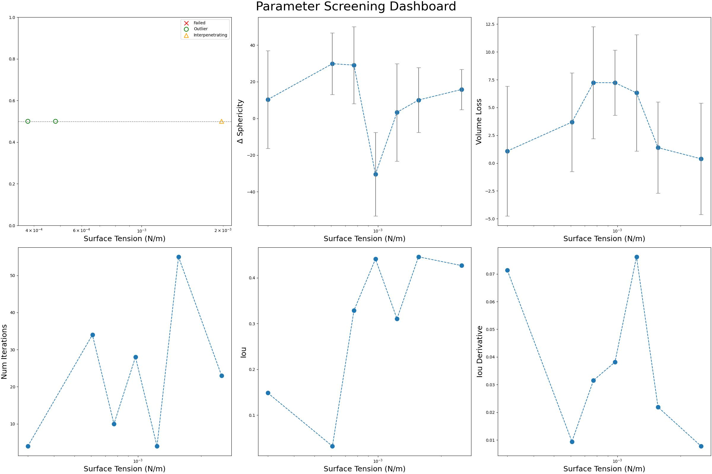
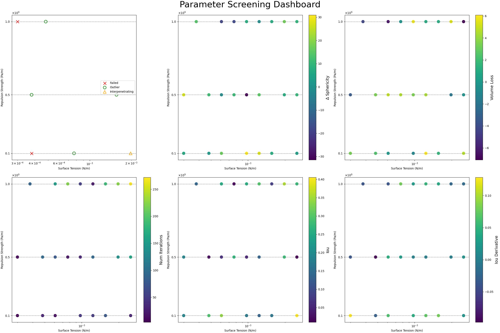
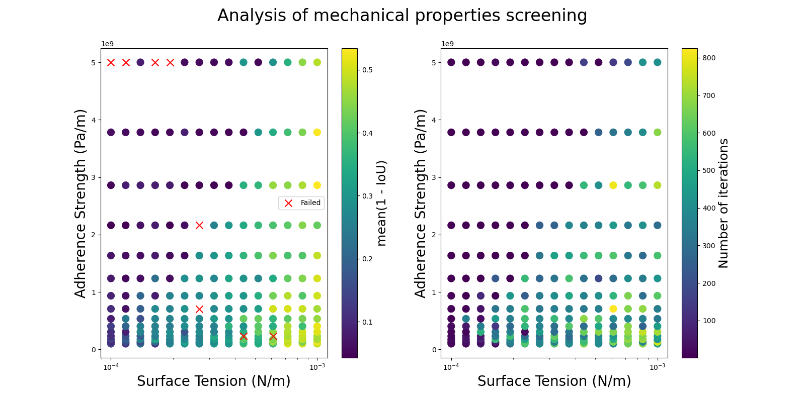

Parameter screening#
A parameter screen runs many simulations that differ in a few parameters, to find the range in which a tissue behaves as intended or to map how an outcome depends on the parameters. SimuCell3D ships two sets of scripts for this, written for a cluster with the Slurm batch scheduler:
scripts/parameter_screening/: generate one parameter file per row of a table, build SimuCell3D, submit the runs as a Slurm job array, and collect the results.scripts/screening_analysis/: compute summary metrics from the collected results and draw dashboards.
The scripts date from release 1.0 and are unchanged in 2.1. They encode the conventions of the cluster they were written for (resources, e-mail domain); the sections below say what to adapt. For a few simulations on one machine, a loop over parameter files, or the Python module (Python interface), is simpler.
Overview#
parameter table (CSV) ──► launch_screening.py ──► Slurm job array ──► collect_screening_data.py
one row per run XML files, build, one simucell3d summary folder:
sbatch run per row last meshes, statistics
│
screening_analysis/ ◄────────────────────┘
metrics (Slurm jobs) ──► dashboards (local)
Install the Python packages that the scripts need (pandas and NumPy for the screening scripts;
scripts/screening_analysis/requirements.txt for the analysis):
$ pip install pandas numpy
$ pip install -r scripts/screening_analysis/requirements.txt
The parameter table#
The table is a CSV file with one row per simulation and one column per parameter. Each row is
turned into a parameter file by scripts/parameter_screening/parameter_file_model.py, a
template with a placeholder for every parameter. The template fixes the structure of the
parameter file: five cell types in the order epithelial (global_cell_id 0), ECM (1), lumen
(2), nucleus (3) and static (4), the epithelial type with the face types apical, lateral and
basal, and one face type for each of the others. A different structure requires editing the
template.
The table needs a column for every placeholder. Their names are the XML tags of Parameter file reference, prefixed for the cell-type and face-type parameters:
Prefix |
Applies to |
Example |
|---|---|---|
none |
numerical parameters |
|
|
epithelial cell type |
|
|
apical, lateral and basal face types |
|
|
ECM, lumen, nucleus and static cell types and their face type |
|
Tags that start with cell_ lose that part: the columns for cell_mass_density and
cell_bulk_modulus are <prefix>mass_density and <prefix>bulk_modulus. A missing column stops the script with a
KeyError naming the column. Extra columns are ignored by the launch script.
scripts/parameter_screening/parameter_table.csv is a complete example with five rows, and the
simplest starting point: copy one of its rows and vary the parameters of interest. The
following script, run from the repository root, builds a 3 x 3 grid over the apical and
lateral surface tensions of the epithelial cells:
import itertools
import pandas as pd
template = pd.read_csv("scripts/parameter_screening/parameter_table.csv")
base = template.iloc[0]
rows = []
for apical, lateral in itertools.product([5e-4, 1e-3, 2e-3], [2e-4, 4e-4, 8e-4]):
row = base.copy()
row["epi_api_surface_tension"] = apical
row["epi_lat_surface_tension"] = lateral
rows.append(row)
table = pd.DataFrame(rows).reset_index(drop=True)
table["sim_id"] = range(1, len(table) + 1)
table.to_csv("my_screen.csv", index=False)
Notes on the columns:
output_mesh_folder_pathis set by the launch script; its value in the table is ignored.input_mesh_file_pathfollows the usual rules (Paths): a path such asdata/input_meshes/2_cubes.vtkis found relative to the source directory.sim_idis not used by the launch script, which numbers the runs by row (1 for the first row). The analysis dashboards readsim_id, so keep it equal to the row number, as above.The template does not set
contact_detection_algorithm, so all runs use the default.
Launching a screen#
Run launch_screening.py from its own directory, because it locates the repository as two
levels above the working directory. Give absolute paths:
$ cd scripts/parameter_screening
$ python3 launch_screening.py /abs/path/my_screen.csv my_screen /abs/path/to/scratch
The three arguments are the parameter table, the name of the screen (no spaces, commas, semicolons, quotes or slashes) and the folder in which the screen folder is created. The script then:
Creates
<output folder>/<screen name>/with the sub-foldersparameters/,simulation_outputs/andstd_out_err/, and copies the table into it.Writes
parameters/parameters_<i>.xmlfor row \(i\) (from 1), withoutput_mesh_folder_pathset tosimulation_outputs/simulation_<i>.Creates the build folder
build_<screen name>in the repository root (it must not exist yet) and builds SimuCell3D there in Release mode, with the compile-time configuration thatinclude/global_configuration.hpphas at that moment. Set that file first (Compile-time configuration).Submits a Slurm job array with one task per row. Task \(i\) runs
./simucell3d parameters_<i>.xmlin the build folder, writes its standard output and error tostd_out_err/stdout_<i>.txt, and appends to that file the linesimucell3d exit status: <code>when the simulation ends.
The submission command in the script requests, per task, one Slurm task with 4 CPUs, 48 hours and 2048 MB per CPU, and an e-mail at the end of each task:
sbatch -n 1 --cpus-per-task=4 --time=48:00:00 --job-name="<screen>" --array=1-<rows>
--mem-per-cpu=2048 --mail-type=END --mail-user=<login>@bsse.ethz.ch
--wrap="export OMP_NUM_THREADS=4; ./simucell3d <parameters>_$SLURM_ARRAY_TASK_ID.xml &> <stdout>_$SLURM_ARRAY_TASK_ID.txt;
echo simucell3d exit status: $? >> <stdout>_$SLURM_ARRAY_TASK_ID.txt"
Important
Edit the command_str in launch_screening.py before using it on another cluster:
the e-mail address is built from the login name and the
bsse.ethz.chdomain;time and memory limits depend on the tissue size and duration;
export OMP_NUM_THREADS=4has no effect in 2.1. SimuCell3D starts one thread per physical core of the CPUs that Slurm assigns to the task, which may be 2 rather than 4 if the 4 CPUs are hyperthreads of 2 cores. To fix the number, add--threads=4to the./simucell3dcommand (Running simulations).
For another batch system, replace the sbatch command with the equivalent job-array
submission; the rest of the script is independent of the scheduler.
The script reads the login name with os.getlogin(), which fails when it is run without a
terminal (for example from a cron job); run it from an interactive shell.
Monitor the jobs with squeue -u $USER and the files in std_out_err/.
Collecting the results#
When the jobs have finished, collect the last state of every run into one folder:
$ cd scripts/parameter_screening
$ python3 collect_screening_data.py /abs/path/to/scratch/my_screen
The argument is the screen folder. The screen folder must contain exactly one .csv file,
the copy of the table made by the launch script. The script creates summary_folder/ in the
screen folder, containing:
Path |
Content |
|---|---|
|
The last |
|
The last |
|
The statistics CSV of run \(i\). |
|
Copies of the screen’s folders. |
|
The parameter table with two added columns. |
The added columns are file_count, the number of face_data files that run \(i\) wrote (a
measure of how far it got), and has_crashed. A run counts as crashed if its output folder or
its std_out_err/stdout_<i>.txt is missing, or if the last non-empty line of that file is not
simucell3d exit status: 0. A task that Slurm kills (for example at the time limit) never
writes that line and therefore counts as crashed; its file_count shows how far it got.
Warning
has_crashed is false for a run in which the safeguards removed most of the cells. In 2.1 the
unstable-cell removal has no limit, and a run whose tissue diverges can exit with status 0 after
losing almost all of its cells (Safeguards). For each run, also count the
Removing lines in std_out_err/stdout_<i>.txt, which holds both output streams, and compare
them with the cell count before treating a parameter point as a valid result.
Note
collect_screening_data.py overwrites the table in the screen folder with the extended table,
which gains an extra index column, and stops if summary_folder/ already exists. Delete or
rename that folder before running the script again.
Analysing a screen#
scripts/screening_analysis/ computes, for every run, metrics comparing the final with the
initial geometry, and plots them against the screened parameters:
Metric |
Meaning |
|---|---|
|
Change in cell sphericity between the initial and the final geometry. |
|
Relative change of cell volume between the initial and the final geometry, in percent. |
|
Number of output files the run wrote ( |
|
Mean over the cells of 1 minus the intersection over union of the initial and final cell, averaged over the last 10 available outputs. |
|
Mean derivative of the last 10 values of |
|
Whether cells of the final geometry interpenetrate. |
The analysis has two steps.
Metrics, on the cluster.
run_data_collection.pysubmits four Slurm jobs (utils/compute_statistics.py,utils/compute_IoU_euler.py,utils/compute_interpenetration_euler.py,utils/compute_num_iterations.py), which write their results to<screen folder>/dashboard_files/. It has no command-line arguments: setroot_dir(the screen folder) andscreening_csv_file_name(the name of the table) in its__main__section, and run it fromscripts/screening_analysis/. It reads the table from<screen folder>/summary_folder/<table>.csv, written bycollect_screening_data.py.Dashboard, locally. Copy the screen folder (at least
summary_folder/anddashboard_files/) to a workstation and runscreening_dashboard.py. Set in its__main__section the metrics (indicators, which must includeinterpenetration), the screened parameters (parameters, names frommisc/param2table.json, the first one on the x-axis), their axis scales (linear,logordiscrete),root_dirandscreening_csv_file_name. The plots are written to<screen folder>/dashboard_plots/.
The dashboard depends on the number of screened parameters: one plot per metric against the parameter for one parameter, a coloured scatter plot over both parameters for two, and a swarm plot for more. Failed runs, runs with interpenetrating cells and outliers are marked.

Dashboard for one screened parameter.#

value shown by the dot colour.#
Dashboard for two screened parameters.

Dashboard for more than two screened parameters.#
misc/param2table.json maps the parameter names used by the dashboard (for example
surface_tension) to table columns (epi_api_surface_tension); extend it to screen other
columns, and misc/param2unitofmeas.json with their units.
Surface tension and adhesion screens#
mech_props_analysis.py is a reduced dashboard for screens over surface_tension and
adherence_strength. It computes the IoU loss between the initial and the final geometry of
every run and plots it over the two parameters:
$ cd scripts/screening_analysis
$ python3 mech_props_analysis.py <screen folder>/simulation_outputs <screen folder>/my_screen.csv <output folder>
It writes mech_props_plot.png to the output folder.

Output of mech_props_analysis.py.#
Additional scripts#
scripts/screening_analysis/additional/ contains helpers for inspecting individual runs:
check_vtk_empty.py lists empty output files, check_sphericity.py and check_volume.py plot
the evolution of sphericity and volume over the output files, and copy_from_euler.py copies
selected output files from the cluster.
See also
Parameter file reference: all parameters and their units.
Output files: the files collected from each run.
Python interface: running simulations from Python.